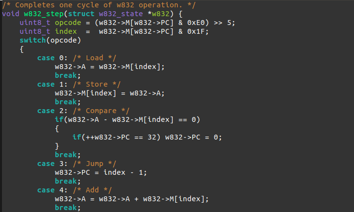

w832
Learning how emulators and assemblers work with a fictional architecture.

Code: wasv/w832
I spent some time this past summer and spring working on learning the basics of designing an instruction set. I didn't formally learn these topics for a year or two in my college. However, I found myself with enough time to design an emulator and assembler for a fictional instruction set that I designed based on the architecture of the Manchester SSEM The instruction set is named W832, short for "WASV's 8-bit, 32-address Instruction Set".
The process of deciding on an architecture was essentially a really long Wikipeida Rabbit Hole ranging from orthogonality to one instruction set architectures. The one instruction architectures were very useful to look at as an example of the bare minimum needed for a useful instruction set. Eventually I got my instruction set down to 8 instructions, leaving 5 bits to address 32 bytes of memory. I might also make a W816 instruction set with support for immediate operands, however this would reduce the address bits to 4, leaving only 16 bytes to address memory.
I also have a JavaScript emulator for a different architecture, C1616. C1616 is an extension of Daniel Bailey's C88, which was also based on the SSEM. I've found that either W832 or C88 can be useful in learning the basics programming in an assembly language, without the need to have dedicated hardware.